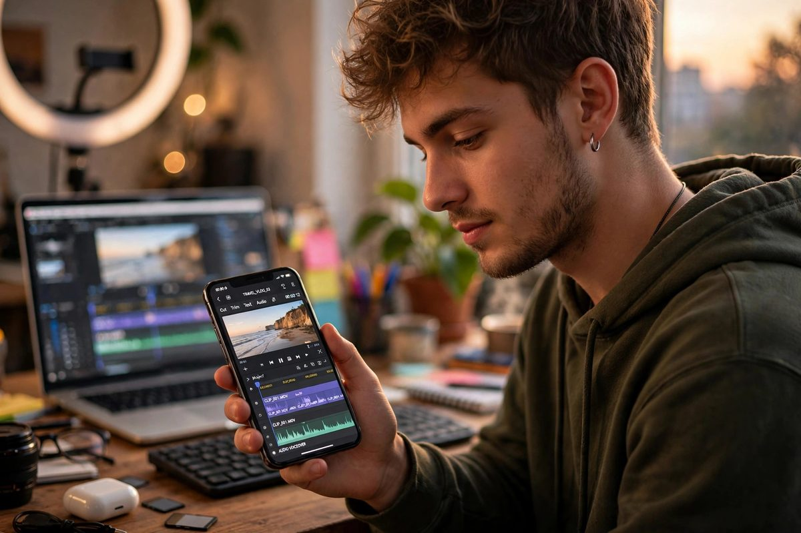

Best Export Settings in CapCut

You spent an hour editing — do not lose the quality in the last ten seconds. These export settings keep your video sharp on TikTok, Reels and YouTube.
Where the export settings live
When your edit is done, tap the Export button (usually top right). CapCut shows resolution, frame rate and quality options before it renders. Many people tap Export without looking — and that is how a crisp 1080p edit becomes a soft 720p upload. Take ten seconds to check the three settings below every time. Once you know your usual combination, it becomes a habit: same settings, same quality, every video.
Resolution: 1080p for social, 4K for YouTube
For TikTok, Instagram Reels and YouTube Shorts, export at 1080p (1080 × 1920 for vertical). The platforms display at 1080p or lower, so 4K only makes the file bigger and the upload slower. For YouTube landscape videos, 1080p is also the right default; use 4K only if your source footage is 4K and your audience watches on large screens. Never export below 1080p for a public post — 720p looks noticeably soft on modern phones, and the platforms compress it further.
Frame rate: 30fps, or match your footage
Export at 30fps for almost everything. It matches most phone footage, keeps file sizes reasonable, and looks natural for talking videos, vlogs and tutorials. Use 60fps only if you filmed at 60fps and the video has fast movement — sports, dance, gaming. Exporting 30fps footage at 60fps does not make it smoother; it just duplicates frames and doubles the file size. Exporting 60fps footage at 30fps throws away half the smoothness, so match the export to the source.
Quality and bitrate: always choose High
CapCut's export screen offers quality levels — choose the highest available. Behind that setting is the bitrate: aim for 12–20 Mbps at 1080p and around 45 Mbps at 4K. A higher bitrate survives the platform's own re-compression much better. If the export is too big to upload, shorten the video or trim a clip rather than dropping the bitrate — a short sharp video always beats a long soft one. Use our bitrate calculator on this site to predict the exact file size before you export.
| Platform | Resolution | Frame rate | Bitrate |
|---|---|---|---|
| TikTok | 1080 × 1920 | 30 fps | 12–20 Mbps |
| Instagram Reels | 1080 × 1920 | 30 fps | 12–20 Mbps |
| YouTube Shorts | 1080 × 1920 | 30 fps | 12–20 Mbps |
| YouTube (landscape) | 1920 × 1080 | 30 fps | 12–20 Mbps |
| YouTube 4K | 3840 × 2160 | 30 fps | 45 Mbps |
Format: MP4 is the safe choice
CapCut exports as MP4 (H.264) by default, which every platform accepts. Some devices offer H.265 (HEVC), which makes smaller files at the same quality — but older phones and some platforms handle it poorly, and uploads can fail or look worse after re-encoding. Stick with MP4 H.264 unless you know your platform supports HEVC well. The same goes for HDR export: leave it off for social video, since most viewers' screens are not HDR and the video can look washed out.
After export: check before you post
Before uploading, watch the exported file once on your phone at full screen. Look for blockiness in fast movement, blurry text, audio that is out of sync, and captions covered by platform buttons. If anything is wrong, fix it in the project and re-export — it is much easier than deleting a posted video and re-uploading. Also check the file size: if a one-minute video is over 300 MB at 1080p, something is off, and you probably exported at an unnecessarily high setting. Upload on Wi-Fi when you can; a weak mobile connection can make the platform compress your video more aggressively.
Frequently asked questions
Why is my exported video bigger than expected?
High bitrate and long duration. A minute of 1080p at 20 Mbps is about 150 MB. Shorten the video or lower the bitrate slightly if size matters.
Does exporting twice reduce quality?
Yes — every re-encode loses a little quality. Export once from CapCut and upload that file. Do not export, re-import and export again.
What if CapCut export fails?
Free up storage, close other apps, and try again at 1080p. Very long 4K exports can fail on older phones with little free space.
Download CapCut — official app
Get the real CapCut free from your official app store. No modified files, no risk.
Try the tools
Aspect Ratio Calculator
Presets for TikTok, Reels, Shorts and YouTube. Enter one side and get the matching resolution instantly.
Bitrate & Export Size Calculator
Work out how big your exported video will be from its length and bitrate — or the bitrate for a target size.
Caption Timing Helper
Paste your script and split it into timed caption lines with start and end timestamps, ready to use.
Template Idea Generator
Pick a niche and a mood and get a complete edit idea: hook, style, transitions and music vibe.
More guides

What Is CapCut Mod APK? CapCut Premium vs Free
CapCut Premium vs Free Is CapCut Mod APK Safe?
Is CapCut Mod APK Safe? How to Install CapCut Officially
How to Install CapCut Officially Best CapCut Templates in 2026
Best CapCut Templates in 2026 Auto Captions in CapCut
Auto Captions in CapCut Keyframe Animation in CapCut
Keyframe Animation in CapCut CapCut Transitions Tutorial
CapCut Transitions Tutorial Best Video Quality Settings
Best Video Quality Settings CapCut for TikTok
CapCut for TikTok CapCut for Instagram Reels
CapCut for Instagram Reels Text Effects in CapCut
Text Effects in CapCut Background Removal in CapCut
Background Removal in CapCut Speed Ramping in CapCut
Speed Ramping in CapCut Filters and Effects in CapCut
Filters and Effects in CapCut Audio Editing in CapCut
Audio Editing in CapCut CapCut vs KineMaster
CapCut vs KineMaster CapCut for Beginners
CapCut for Beginners Trending Edits Tutorial
Trending Edits Tutorial